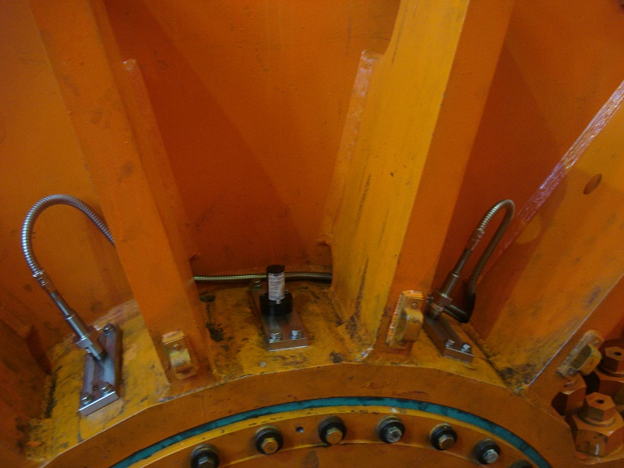
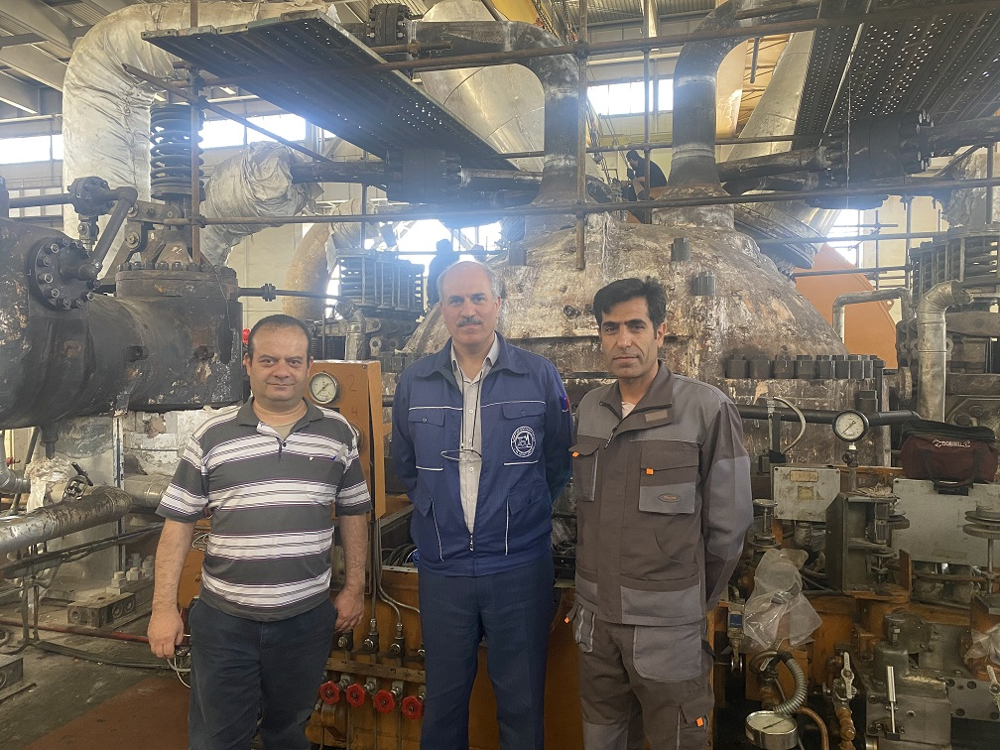

شرکت اتوماسیون صنعتی پایش توربین ویدا


شرکت پایش توربین ویدا با بیش از 28 سال سابقه ی تیم مهندسی آن در زمینه ی اتوماسیون صنعتی در زمینه های زیر فعالیت دارد .
مشاوره ی تخصصی و آموزش سوپروایزری ماشینهای دوار از سنسور تا کارتهای mms.
طراحی و تامین تجهیزات و اجرای پروژه های سوپروایزری انواع ماشینهای دوار و رفت و برگشتی.
تست و راستی آزمایی انواع کارتهای mms بوسیله سیمولاتور ویژه ی سیگنالهای ویبریشن.
بی سیم کردن ارتباط استکر و سنگ شکن و یا ریکلایمر با سنگ شکن در کارخانه ی سیمان.